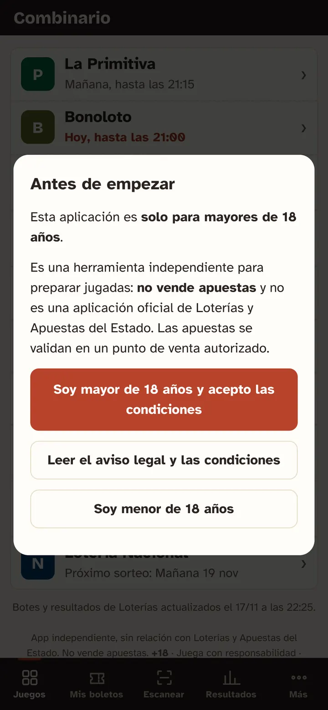
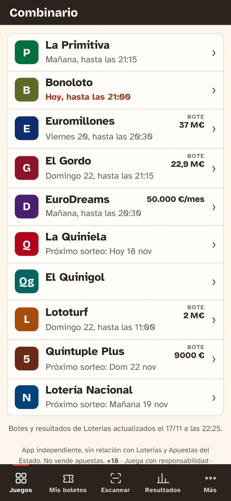

Empezar
App independiente. Combinario no es oficial ni tiene relación con Loterías y Apuestas del Estado (SELAE). No vende apuestas: solo te ayuda a prepararlas, y se validan y se pagan en un punto de venta. Solo para mayores de 18 años.
Combinario te ayuda a preparar tus jugadas de los juegos de Loterías y Apuestas del Estado y a comprobar si tienen premio. La jugada la validas siempre en tu punto de venta.
Instalar la app
| Dónde | Cómo |
|---|---|
| Android | En combinario.es, pulsa «Descargar la beta para Android», abre el archivo descargado y pulsa «Instalar». Si el móvil lo pide, permite instalar desde esa fuente. |
| iPhone, iPad u ordenador | Abre combinario.es (en iPhone, con Safari), pulsa «Abrir la beta para iPhone» y, dentro de la app, «Compartir» › «Añadir a pantalla de inicio». |
Si ya tenías una versión de antes del 6 de noviembre, sigue los pasos de «Si ya tenías la app» de combinario.es: así no pierdes tus jugadas.
La primera vez
La app te pregunta si eres mayor de 18 años y te pide aceptar las condiciones. Si eres menor de edad, no puedes usarla.

La portada
Cada juego es una fila. A la izquierda va su inicial con el color del juego; en el centro, el nombre y hasta qué hora se puede jugar el próximo sorteo («Hoy, hasta las 21:00» sale en rojo si cierra hoy). A la derecha, si lo hay, el bote que publica Loterías.
Debajo de la lista, la app dice de cuándo son los datos. Si tienen dos días o más, lo avisa.

Las cinco pestañas de abajo
| Pestaña | Para qué sirve |
|---|---|
| Juegos | Volver a la portada y elegir juego. |
| Mis boletos | Las jugadas que has guardado y la copia de seguridad. |
| Escanear | Leer el QR de un resguardo o el código de un décimo para saber si tiene premio, y la lista de premios de Lotería Nacional. |
| Resultados | Los últimos resultados y botes de cada juego. |
| Más | Tu punto de venta, información legal, importar apuestas, histórico, ajustes. |
Versión beta
Hasta el 31/12/2026 la app es una versión de prueba con todo desbloqueado. Si ves algo que no va bien, en Más › «Versión beta» puedes avisar por WhatsApp o por correo.
Modo oscuro y letra grande
Si tu móvil está en modo oscuro, la app también. La letra grande se activa en Más › Ajustes.